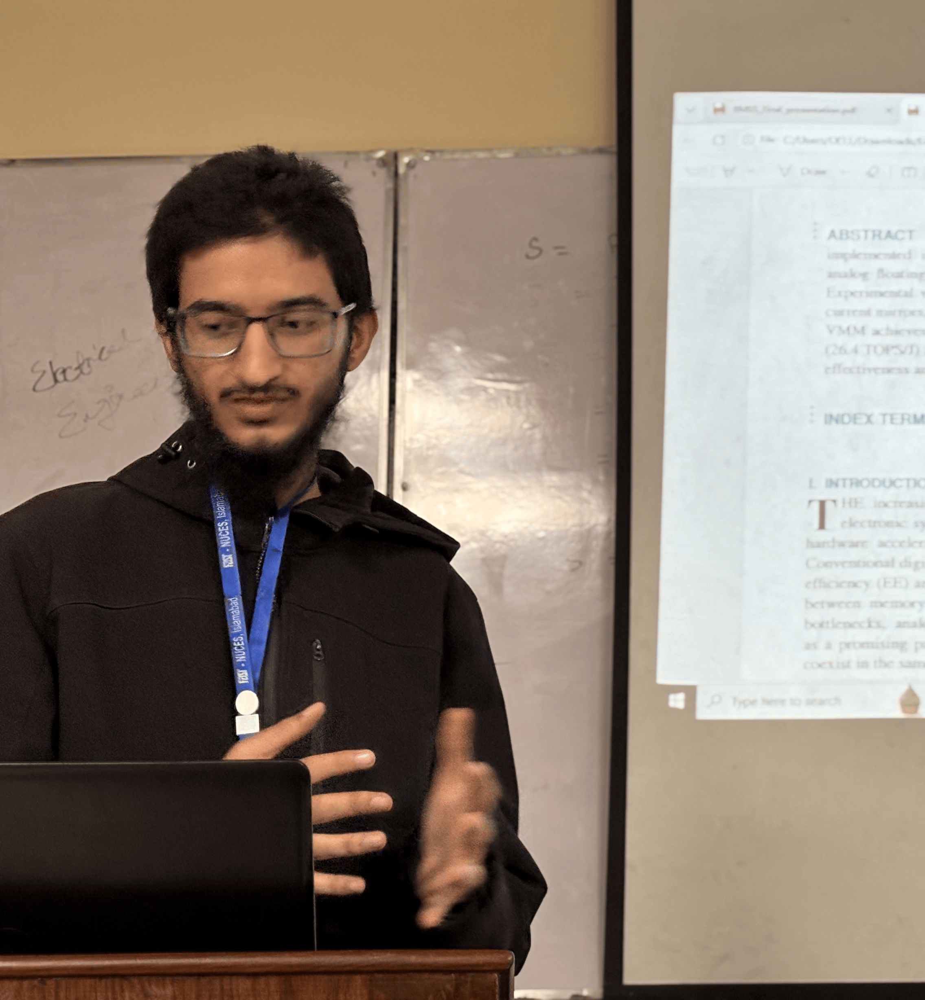

Efficient CNN Multiplier Architecture
High-Performance & Energy-Efficient AI Accelerator
An AI Accelerator that helps edge devices compute what it offloaded to different servers.
Problem Statement
Convolutional Neural Networks (CNNs) excel in image processing but are computationally expensive. Over 90% of computation comes from Multiply-Accumulate (MAC) operations. Conventional multipliers consume excessive power, occupy large silicon area, and suffer from high critical path delays.
Edge devices typically offload this compute to a server and wait for the output. This not only increased the latency, but also damages the privacy of the individial. Why not keep everything in house and respect people's time, energy and privacy?
Our Solution
We designed an efficient hardware multiplier architecture for CNN-based image processors using:
- Radix-4 Booth Encoding to reduce partial products by 50%
- High-speed 4:2 Compressor Trees to shorten critical path delay
- SRAM Memory Tiling for reduced memory bandwidth and faster computation
Hardware Processing Pipeline
- Input Image → Preprocessing (224x224 RGB, Int8)
- SRAM Tiling → Fetch initial 3x3 block and reuse cached data
- Convolution → Booth Encoding → 4:2 Compressor → Final CPA Sum
- Pooling → Downsampling → Dense Matrix Multiplication → Softmax Probabilities
- Output → Real-time classification (e.g., Zebra: 98%)
Architecture Benefits
- Memory Tiling: Reuses local pixel blocks in SRAM to reduce DRAM fetches.
- Radix-4 Booth Encoding: Cuts partial products by half compared to standard multipliers.
- 4:2 Compressor Trees: Condenses four inputs into two outputs, shortening critical path.
Project Supervisors
Dr. Khurram Javed
Dr. Hassan Saif
Dr. Rashid Ramzan
Engineering Team
Ahmad Shaban
IC Design EngineerAwab Younas
IC Design EngineerEeman
IC Design EngineerFajar Waseem
IC Design EngineerHumail Nawaz
IC Design EngineerKousar Gul
IC Design EngineerMuhammad Mirza
IC Design Engineer
Osama Mirza
IC Design EngineerSalman Qazi
IC Design Engineer
Sana Nazir
IC Design EngineerUme Kalsoom
IC Design EngineerReferences
- S. Dargan, M. Kumar, M. R. Ayyagari, and G. Kumar, "A Survey of Deep Learning and Its Applications: A New Paradigm to Machine Learning," Arch. Comput. Methods Eng., vol. 27, no. 4, pp. 1071–1092, 2020, doi: 10.1007/s11831-019-09344-w.
- W. Xie, C. Zhang, Y. Zhang, C. Hu, H. Jiang, and Z. Wang, "An Energy-Efficient FPGA-Based Embedded System for CNN Application," 2018 IEEE Int. Conf. Electron Devices Solid State Circuits, EDSSC 2018, Oct. 2018, doi: 10.1109/EDSSC.2018.8487057.
- F. U. D. Farrukh, T. Xie, C. Zhang, and Z. Wang, "Optimization for Efficient Hardware Implementation of CNN on FPGA," Proc. 2018 IEEE Int. Conf. Integr. Circuits, Technol. Appl. ICTA 2018, pp. 88–89, Jul. 2018, doi: 10.1109/CICTA.2018.8706067.
- T. Kowsalya, "A novel cognitive Wallace compressor based multi operand adders in CNN architecture for FPGA," J. Ambient Intell. Humaniz. Comput., vol. 12, no. 7, pp. 7263–7271, Aug. 2020, doi: 10.1007/s12652-020-02402-3.
- F. U. D. Farrukh et al., "Power Efficient Tiny Yolo CNN using Reduced Hardware Resources based on Booth Multiplier and WALLACE Tree Adders," IEEE Open J. Circuits Syst., pp. 1–1, Jul. 2020, doi: 10.1109/ojcas.2020.3007334.
- Y. E. Kim, J. O. Yoon, K. J. Cho, J. G. Chung, S. I. Cho, and S. S. Choi, "Efficient design of modified Booth multipliers for predetermined coefficients," Proc. - IEEE Int. Symp. Circuits Syst., pp. 2717–2720, 2006, doi: 10.1109/ISCAS.2006.1693185.